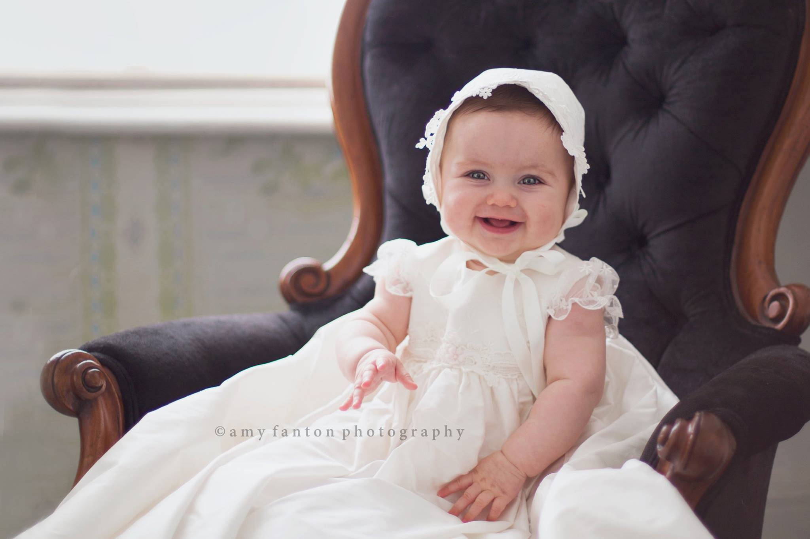

Newborn & Maternity
Beautiful London Baptism Photography
10 July 2014

I had the pleasure of doing this beautiful little girl’s baptism photography not too long ago. The weather was perfect, the christening gown was stunning and the venue was magnificent in one of London’s most beautiful cathedrals– St. Mary Abbots, located in the heart of London just around the corner from Hyde Park.
This little girl had loveliest sparkly blue eyes and the sweetest little pout. I don’t think babies get any more precious than this–isn’t she a doll?!? I had done some newborn photography for this little sweety and this was the first time I had seen her since and I was amazed at how big and beautiful she had become!
There were no photographs allowed during the ceremony so I snapped just one from the outside looking in until the service was over. This really is one of the most special days in a child’s life and probably the most important white dress they will wear in their lifetime (I’m sure some of you fashionistas would argue it’s the 2nd!), so it makes a wonderful day to capture with Christening photography.
I approach baptism photo shoots the same way I would approach any wedding in terms of focusing on the details, getting great portraits, as well as formal shots and candid images of the guests. Anyway, Here are a few of my favorites from this portrait session. Enjoy! PS– I’ll be doing some wedding photography here at this same venue in just a few months–I can’t wait!
Such gorgeous girl and love her Christening gown! I’m glad her parents hired you to capture this special moment in her life.
Oooh I love how the Baptism photos showcase the baby girl’s adorable personality! Her smiles are just too sweet! And St. Mary Abbots is such a gorgeous location as well. I am impressed with so many of these images, it’s almost like a mini wedding that you photographed, including all of the dress and detail shots as well! Beautiful work :)
How adorable is that little girl. I love her smile. I love everything you captured for them. It will be a wonderful reminder of such a special day.
What a gorgeous session. These baptism images will be cherished for a lifetime!
These are so lovely. You’ve captured some beautiful moments and gorgeous detail from her special day. You’ve an amazing way of telling a story. So fabulously done!!!
That church, that dress and those amazing blue eyes are just phenomenal! Awesome photos and what an adorable little girl!